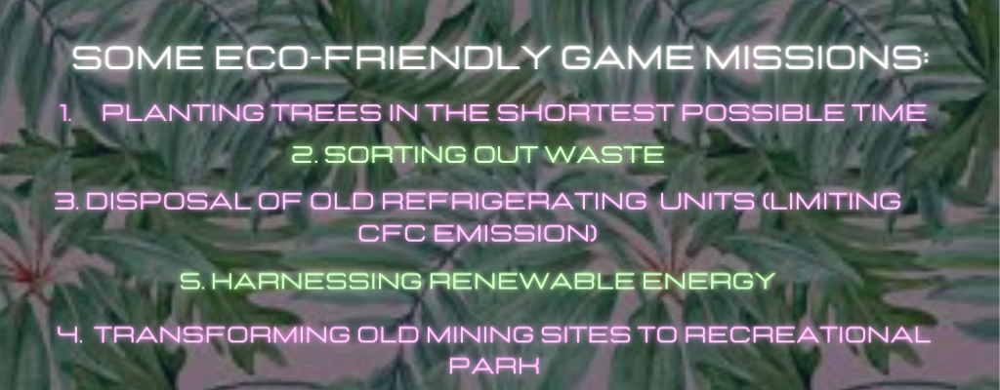
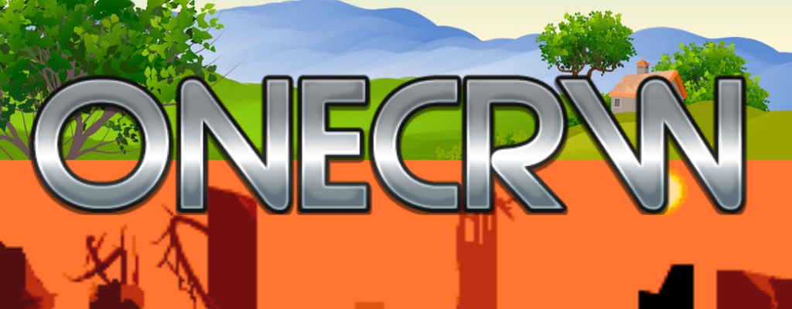

Kanzah's cool IT girls Blog
Game Designing like Creating Magic!
Kanzah Zahed, 2nd August 2021
A few days back, I had an incredible session about Game Design as part of the Itgirls course. Our guest presenter, Miss Racquel Gonzalez emphasised the importance of women in video gaming history and covered crucial aspects of game design. Then, there was an exciting challenge for all of the participant-to plan your very own game design. We were assigned with groups and topics and it was the time to roll up our sleeves and get started.
My team's topic was 'how could climate change impact my neighbourhood and others'. I gathered up all the thoughts I had, such as game objectives and features and started incorporating them into our shared google presentation and see it all come together. My fellow team members were absolutely great; we kept sharing our thoughts back and forth and come together as a single condensed idea.
The game we created is called 'ONECRW', in which players are supposed to understand the effects of climate change and one's accountability towards it. In this game, players are supposed to overcome the challenges of extreme climate. These climatic conditions are going to be inspired by actual climatic events such as forest fires in Australia, floods in Pakistan, hurricanes in Texas, earthquakes in japan etc.
There will be specific missions for reversal of climate change such as planting trees, cleaning rivers and stopping oil spills. These will depend on where you decide to play on the map, for example, if you select the coastline, beach clean-up will be one of the tasks. Our game map will look something like this
 picture source for the game mapI thought it would be nice to design an original game cover as most games have it. I went on with creating it real quick and nearly in 10 minutes, I made this:
On the top portion of the poster, there is scenery with greenery and serenity while the bottom is exactly the opposite of it showing a barren, dystopian landscape. I made this to depict the contrast between the two landscapes and show what consequences of climate change if we do not take action. I used bold metal letters to accentuate the game name.